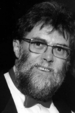

Please note: the AAS Obituaries are temporarily being hosted on this website while their full content is being ingested into the PubPub publishing platform newly adopted by the Bulletin of the American Astronomical Society. When the migration is complete, your existing links will take you to the final, migrated content. Contact peter.williams@aas.org with any questions.
Ludwig Friedrich Oster (1931-2003)
Ludwig Friedrich Oster died at the Anchorage Nursing and Rehabilitation Center in Salisbury, MD on 28 February 2003, of complications from advanced Alzheimer's disease. He is survived by his wife Cheryl M. (Oroian) and his two children by a previous marriage, Ulrika and Mattias Oster. He had a distinguished career both as a researcher in solar physics and as a science administrator in the National Science Foundation.
Ludwig was born on 8 March 1931 in Konstanz, Germany and emigrated to the U.S. in 1958, acquiring American citizenship in 1963. His mother and father were Emma Josefine (Schwarz) and Ludwig Friedrich Oster. He got a BS degree in physics at the University of Freiburg under the guidance of Prof. K. O. Kiepenheuer in 1951, and a MS (1954) and PhD from the University of Kiel in 1956 under the guidance of Prof. A. Unsold. From 1956 to 1958 he was a Fellow of the German Science Council at Kiel and, upon his arrival to the US in 1958, he became a Postdoctoral Research Associate in the Physics Department of Yale University. He became an Assistant Professor of Physics and Astrophysics at Yale in 1960 and five years later he was promoted to Associate Professor. In 1967 he became an Associate Professor of Physics and Astrophysics at the University of Colorado and a Fellow of the Joint Institute for Laboratory Astrophysics; he was promoted to Full Professor in 1970. In 1981 he was a Visiting Professor at Johns Hopkins University, and shortly thereafter became a National Research Council Senior Associate at NASA/Goddard Space Flight Center in Greenbelt, MD, where he worked on solar variability. He joined the National Science Foundation in 1983, where he became the Program Manager for the National Radio Astronomy Observatory in the Division of Astronomical Sciences of the Foundation; he remained there until his retirement in 1996. His early work, started in Germany and continued at Yale, concerned radiation mechanisms related to solar phenomena. His works on cyclotron radiation, plasma oscillations and bremsstrahlung radiation have become classic publications in plasma physics and they continue to be referenced in the current literature. During this period he started his student mentoring work that led to the awarding of several PhD degrees. At Boulder, he extended his work on solar and plasma physics to the newly discovered quasars and pulsars. He loved to study and understand the mysterious and the puzzling phenomena, which the Universe so generously provides.
While at Goddard, he joined the effort to understand the variations in total solar irradiance then recently discovered by the Nimbus 7 satellite and the ACRIM experiment on the SMM satellite. He made significant contributions to that problem, particularly regarding the ultraviolet radiation component, and continued to work on it after he had joined the NSF as a science administrator. He published his last scientific paper in 1983, after having joined NSF. Ludwig was a great teacher and an even greater friend. He taught courses including electromagnetic theory, relativistic theory of radiation, quantum mechanics, solar physics and radio astronomy among others. He wrote an introductory textbook in astronomy that was translated into several languages. He directed PhD theses in a variety of topics. Best of all, he instilled in his students a sense of curiosity and confidence that lasted for a lifetime. He used to say, ``if what you think disagrees with the opinion of well-known astronomers, do not simply assume that you are wrong and they are right. It may well be that you are right! Think carefully about it." That advice has served all of us, his former students, well. We will miss his cheerful disposition, his friendliness, and his never-ending curiosity.
Photo courtesy of Sabatino Sofia
Obituary written by: Sabatino Sofia (Yale University, Department of Astronomy), Martin D. Altschuler (Radiation Oncology, Philadelphia, PA)
BAAS Citation: BAAS, 2003, 35, 1468
SAO/NASA ADS Bibcode: 2003BAAS...35.1468S